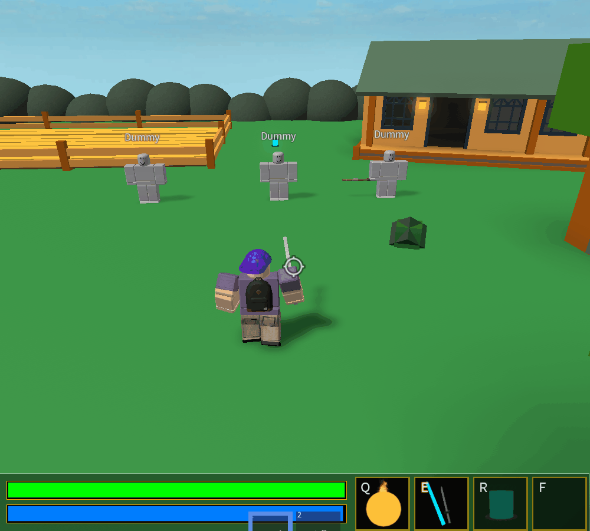

Battlegrounds
Battlegrounds was meant to be a FFA fighting game, where rounds would be timed and the player with the most kills would win the round. There were meant to be various classes, each with their own unique abilities, a round system, and a shop. Created in the Summer of 2018, I still didn't have the experience to bring my vision into a complete state. However, I do have some combat mechanics that I think are worth taking a look at. In addition, this was one of my only attempts at making a full-scale map on my own, and I am fairly proud of that, too.
The Combat
 One of my favorite mechanics that I've ever created is in Battlegrounds. When playing as the swordsman, players can activate an ability that, while they have mana, allows them to send out shockwaves with their sword that will damage any players who get hit. If you are thinking to yourself, "that concept sounds familiar," it's probably because you're a fan of the game Warframe, which is where I got the inspiration for the ability.
In addition to being really cool, this ability actually renders completely on the client, meaning that the server doesn't have the extra load of rendering moving parts, and the shockwaves appear to travel much smoother. As it stands, however, this leaves the game open to exploitation, since the hit detection is also done on the client, meaning that players could potentially "hit" players that they didn't actually hit, since there is currently no server-side validation.
 Another system I have set up in this game that I really like is the mana system. When using abilities, players consume mana,
which can be replenished by using the mana potion ability. While the way it is designed is severely outdated and inefficient,
it still works as intended, integrating beautifully with the UI to provide satisfying player feedback.
Another system I have set up in this game that I really like is the mana system. When using abilities, players consume mana,
which can be replenished by using the mana potion ability. While the way it is designed is severely outdated and inefficient,
it still works as intended, integrating beautifully with the UI to provide satisfying player feedback.
The Assets
I can't talk about Battlegrounds without talking about the map. Most of my time developing this project went into the map design, which initially was supposed to be closed off to just the fenced-in parts of the castle. As I developed the map and its surrounding areas, I saw the potential for a game much different than the original idea of a close-quarters swordfighting game.
All assets in the game, including the images and models, are mine as well, and are examples of my earliest attempts at the various disciplines. For a more complete picture of the game, you can play it for yourself here.